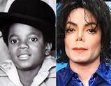

Best known for: Thriller, the best-selling album in history
Nickname: King of Pop
Michael Jackson, in full Michael Joseph Jackson or Michael Joe Jackson.
He was born August 29, 1958.In Gary Indiana, U.S.Died June 25,2009,Los Angeles,California).
Michael's father, Joe Jackson, worked as a crane operator at a steel mill. His mother, Katherine, took care of the family and sometimes took part time jobs. Both of Michael's parents loved music. His dad played guitar for an R & B band and his mother sang and played the piano. Growing up, all of the Jackson children were encouraged to study music.
He was a a famous American singer,songwriter and dancer who was the most popular entertainer in the world in the early and mid-1980s.
Michael grew up in a large family. He had five brothers (Jackie, Tito, Jermaine, Marlon, and Randy) and three sisters (Rebbie, La Toya, and Janet). Michael was the third youngest with Randy and Janet both being younger. The Jacksons were fairly poor and lived in a small house with just two bedrooms for eleven people.
He was reared in Gary, Indiana, in one of the most acclaimed musical families of the rock era, Michael Jackson was the youngest and most talented of five brothers whom his father, Joseph, shaped into a dazzling group of child stars known as the Jackson five 5.
JACKSON FIVE (5)
the members of Jackson five include:
1. Jackie Jackson (by name of Sigmund Jackson; date of birth: May 4,1951,Gary)
2. Tito Jackson (by name of Toriano Jackson; date of birth: October 15, 1953, Gary)
3. Jermaine Jackson (date of birth: December 11, 1954, Gary)
4. Marlon Jackson (date of birth: March 12, 1957, Gary).
5. Michael Jackson (date of birth: August 29, 1958)
A Strict Father
Joe Jackson was a very strict father. He didn't allow the kids to have a lot of friends and he often whipped the children if they disobeyed. He wanted them to stay out of trouble and away from gangs. Later, when the Jackson 5 was still getting started, Joe would push the boys to practice for hours. He would hit them or verbally abuse them if they made a mistake.
Fame
The Jackson five 5 continued to have success. They released more number one singles like "ABC", "I'll Be There", and "The Love You Save." As the lead singer, Michael was becoming very famous. He couldn't go to school because he would be mobbed by fans, so he was taught by private tutors in between rehearsals and concerts. Michael was just a kid when all this happened. He didn't get to play with other kids his age and later felt like he missed out on having a childhood.
Michael Begins a Solo Career
While still singing with the Jackson 5, Michael had a number of solo albums. At first his solo career didn't take off, but he did have a few hit songs including "Ben" and "Got to Be There." However, in 1978 Michael met music producer Quincy Jones while working on the set of the movie The Wiz. He broke away from the family band and worked on his first "grown up" album. In 1979, Michael released the album Off the Wall. It was a huge hit and had four top ten songs including the number one singles "Rock with You" and "Don't Stop 'til You Get Enough." Michael was now one of the biggest stars in music.
Michael wanted to follow up Off the Wall with an even bigger album. This was going to be quite the task. He worked with Quincy Jones again and in late 1982 released the album Thriller. The album was a huge success. It had seven top ten singles and won eight Grammy awards. Eventually, Thriller would become the best selling album of all time. Michael had now become the biggest star in the music industry.
In addition to the music on Thriller, Michael also broke new ground with his music videos. Up until that time, most music videos just showed the band or singer performing the song. Michael wanted to create a story with his videos. These new types of music videos became very popular and changed the way music videos were made. The most famous of his videos was a 13 minute long video for the album's title song Thriller. It was later voted as the most influential music video of all time.
Video Thriller by Michael Jackson
Later Career
Although Michael's career peaked with the Thriller album, he released several more successful albums including Bad (1987), Dangerous (1991), HIStory: Past, Present and Future, Book I (1995), and Invincible (2001).
Private Life
Michael Jackson led an interesting, if somewhat strange, private life. He lived in a large complex he named Neverland Ranch, after the land where fictional character Peter Pan lived. Neverland was part home, part amusement park. The ranch had a petting zoo, railroads, and rides such as a Ferris wheel, roller coaster, bumper cars, and a carousel.
Michael was married twice. His first marriage was to Lisa Marie Presley, Lisa Marie Presley, daughter of the famous rock singer Elvis Presley. His second marriage was to a nursing assistant named Debbie Rowe . He had two children, Michael Joseph Jackson and Paris-Michael Katherine Jackson, with Debbie before they were divorced. Michael also had a third child, Prince Michael Jackson II, but the mother's identity is unknown.
Michael was also famous for changing his appearance. Over the years his nose became thinner, his face changed shape, and his skin tone became lighter. Some people think that he did not like his appearance because of his abuse from his father at a young age. There is also some debate as to how his skin tone changed. Regardless, he looked considerably different as the years passed.

Death
Michael died of a heart attack on June 25, 2009. He was fifty years old. The heart attack was likely caused by drugs he was taking to help him sleep.
He was the best selling artist in the United States for 2009, the year of his death. Around 35 million of his albums were sold worldwide in the 12 months after he died.
He had two pet llamas on his ranch called Lola and Louis.
The album Thriller was number one on the Billboard Chart for 37 weeks.
He purchased the rights to the Beetles catalogue in 1985 for $47 million.
His skin doctor said that his skin tone changed because he had a disease called vitiligo.
He was burned when his hair caught fire during the filming of a Pepsi commercial.
Feed Back
Did you find the information relevant,please let get your opinion.